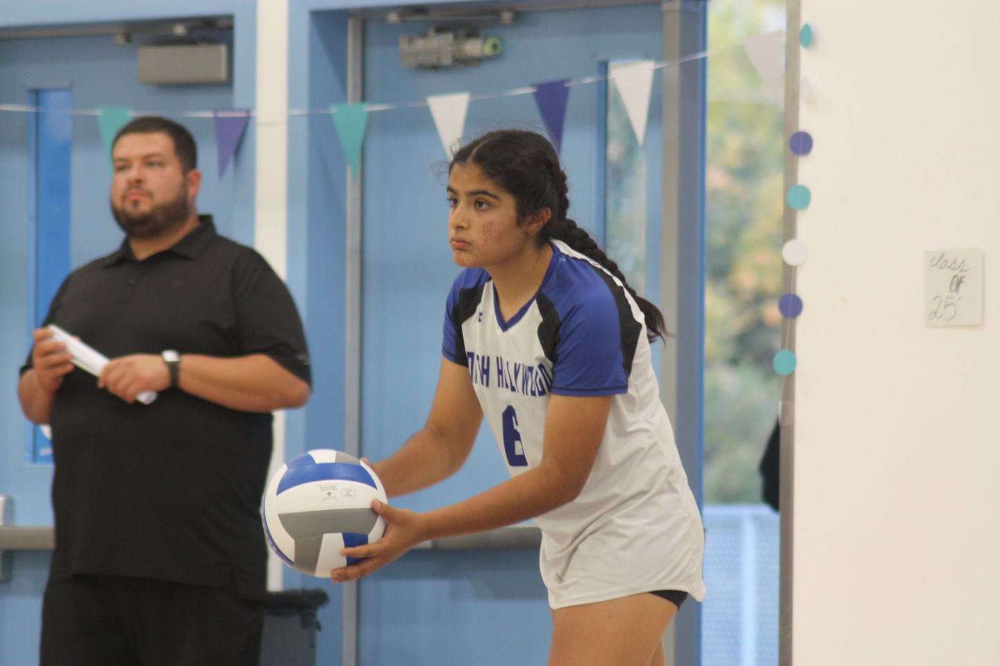

Samaya Patel
Los Angeles Chapter Vice President
Hello I'm Samaya Patel, the Vice President of our Los Angeles chapter. I work closely with Sihyun to coordinate our local initiatives and expand our reach.
My focus is on volunteer coordination and ensuring our chapter members have meaningful experiences while making a difference. I developed our current volunteer training program that's now being adopted by other chapters.
With a passion for healthcare equity, I'm particularly involved in our programs serving underserved communities. Outside of Hearts for Healing, I'm studying public health and enjoy hiking in the California mountains.